✦
TATTOO
O teu corpo. A tua história. A nossa arte.
- Tatuagens personalizadas
- Projetos exclusivos & Autorais
- Arte & Criatividade
Tatuamos ideias. Criamos identidades. Construímos experiências digitais. Arte que não passa despercebida.
A WILD junta tatuagem, design e web num só espaço criativo. O objetivo é simples: pegar numa ideia e transformá-la em algo com identidade própria e linguagem visual marcante.
Três áreas. Uma só linguagem visual.
O teu corpo. A tua história. A nossa arte.
Identidade visual para marcas que querem ser vistas.
Websites modernos feitos à medida do teu projeto.
Projetos autorais, linhas finas, contrastes marcantes e identidades feitas para durar.
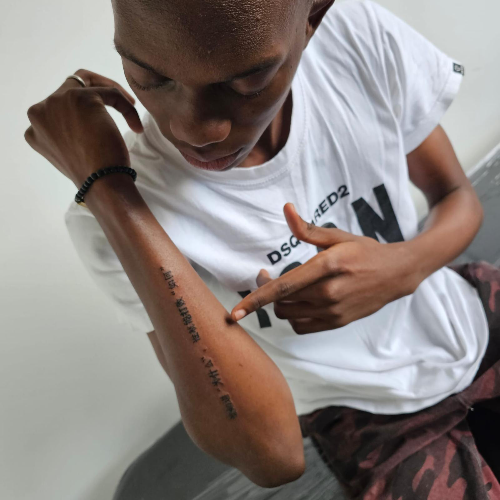
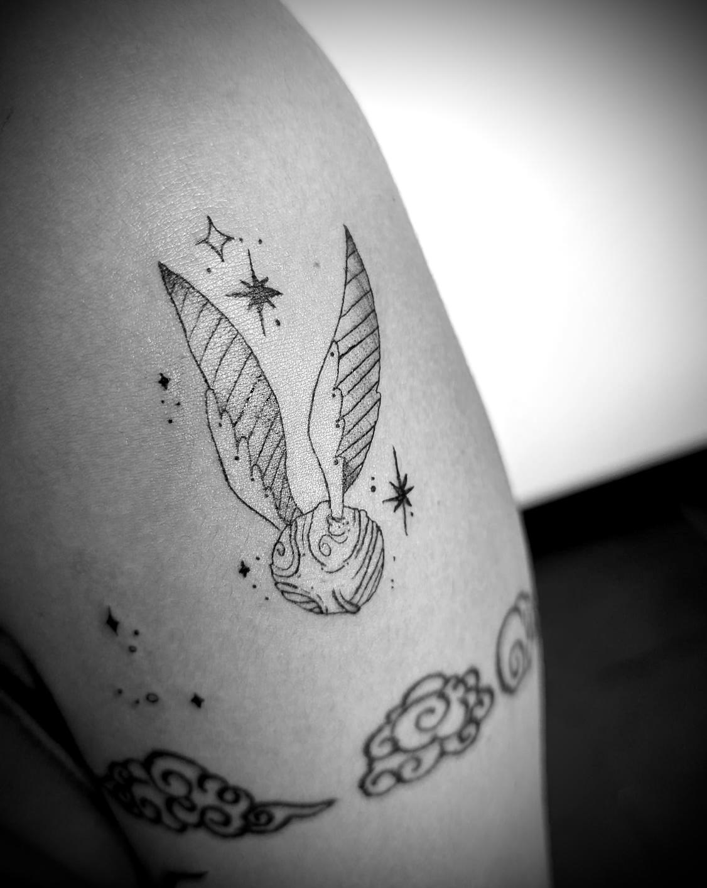
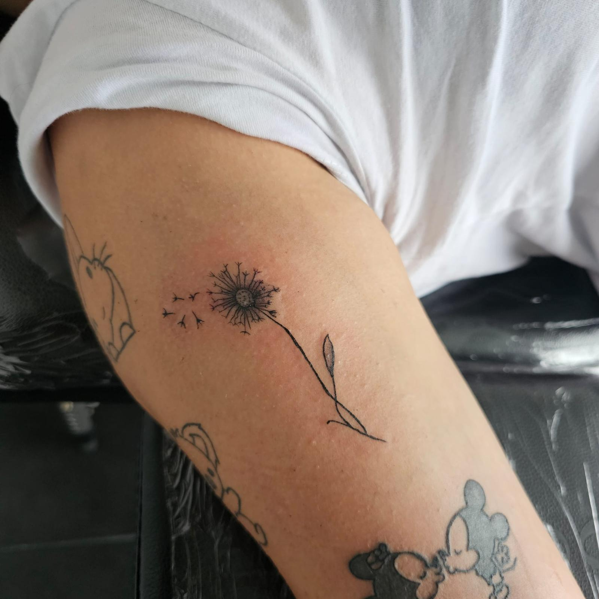
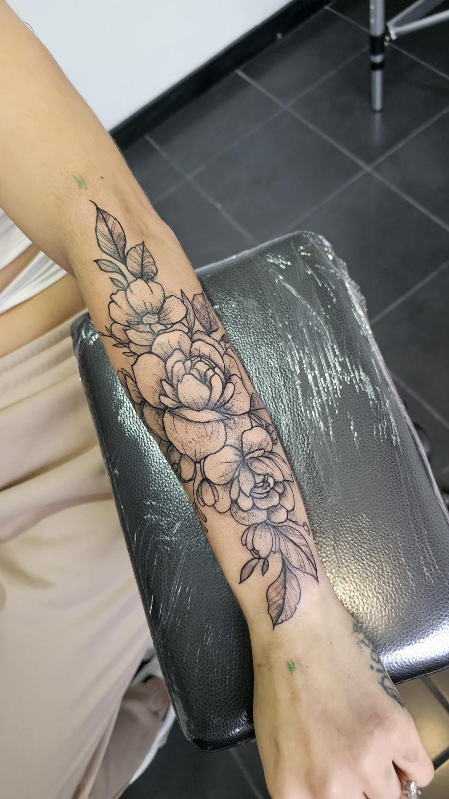
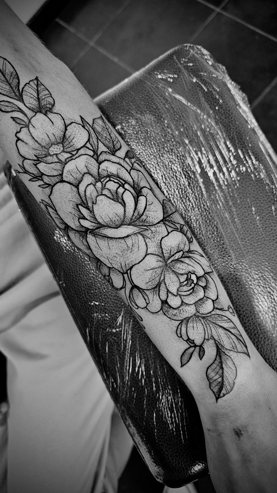
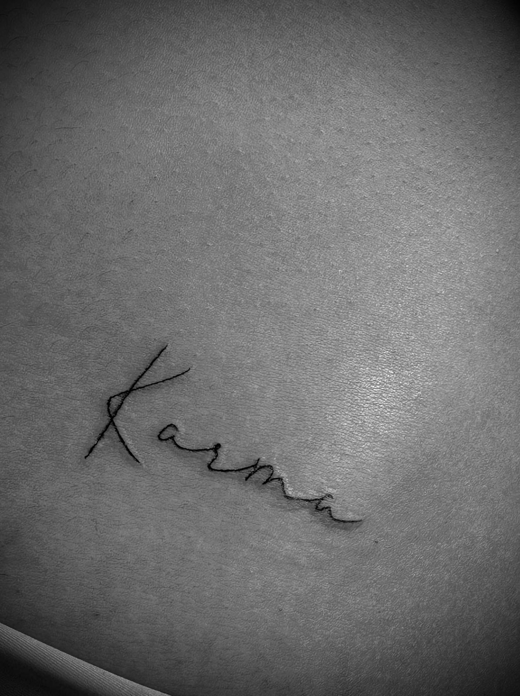
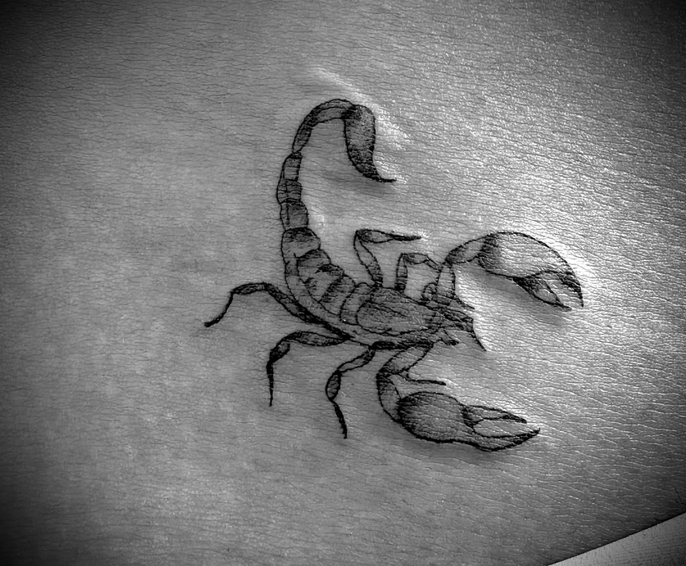
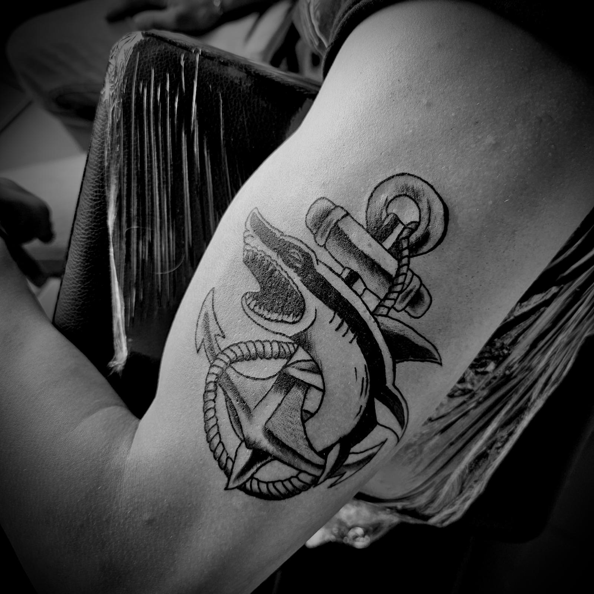
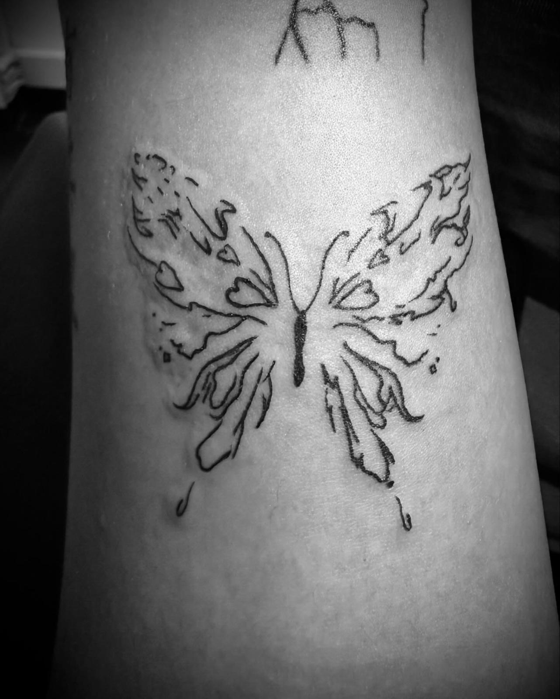
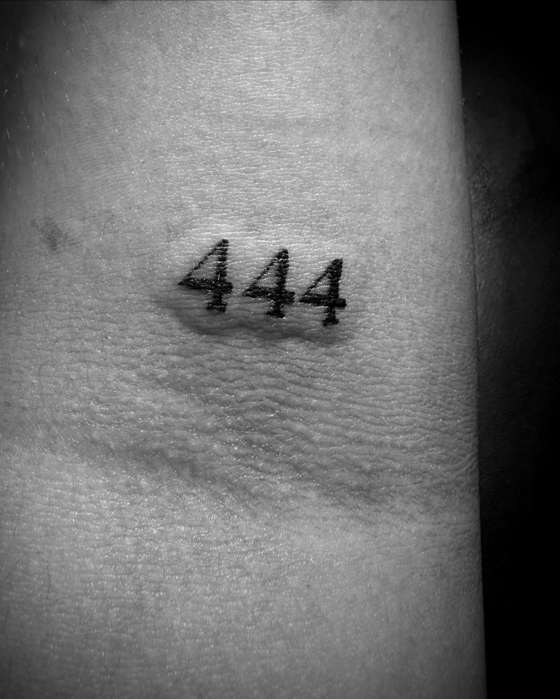
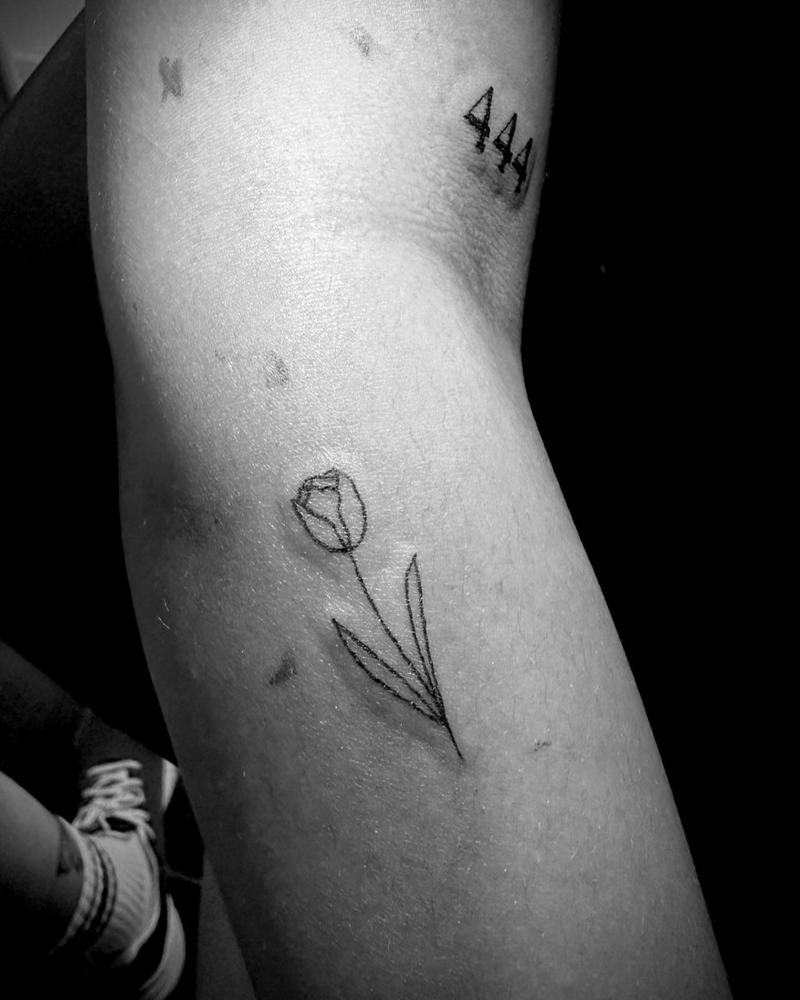
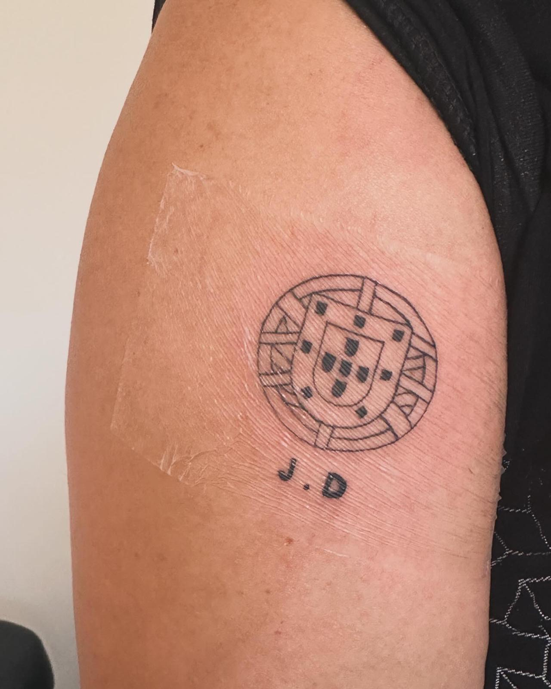
Seja na pele, numa marca ou num ecrã, trabalhamos para criar algo que tenha personalidade. Menos genérico. Mais WILD.
FAQ
Envia-nos a tua ideia por WhatsApp ou Instagram com a zona do corpo, tamanho aproximado em centímetros e imagens de referência para podermos dar o orçamento e agendar a data.
O valor depende do tamanho, complexidade e detalhe do projeto. Cada orçamento é calculado de forma personalizada após o envio da ideia.
Sim. Todos os projetos e flashes podem ser adaptados ou criados do zero para garantir uma peça única desenhada especificamente para ti.
Antes da sessão: hidrata a pele, evita exposição solar intensa e descansa bem. Após a sessão, fornecemos todas as instruções detalhadas de cicatrização e lavagem para garantir que a tatuagem fica perfeita.
Depende da dimensão do projeto. Em média, identidades visuais e branding demoram entre 1 a 2 semanas, e websites profissionais entre 2 a 3 semanas.
Iniciamos com um briefing para entender o teu objetivo. De seguida, apresentamos a proposta visual, desenvolvemos o código e ajustamos até estar pronto para ir ao ar no teu domínio.
Aceitamos MB WAY, transferência bancária e numerário. Para agendamentos ou início de projetos digitais, é solicitado um sinal de reserva.
Criamos toda a identidade gráfica (posters, banners, flyers e templates para feed/stories), além de elaborarmos o planeamento de conteúdos e artes visuais prontas a publicar para destacar o teu negócio nas redes sociais.
Queres marcar uma tatuagem ou pedir um orçamento para design ou web? Conta-nos a tua ideia.